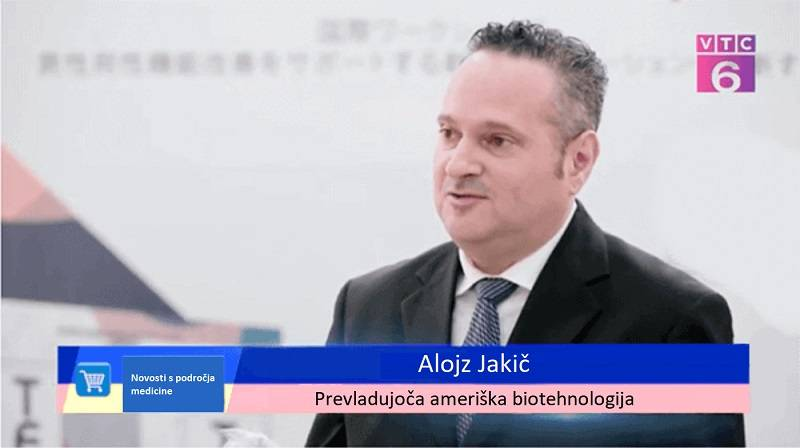

Erekció akár 60 évesen - a magyar kutatók szövetsége hatékony készítményt kínál a férfiaknak a potencia helyreállítására.
A vizsgálatok kimutatták, hogy 3-4-szer hatékonyabb és biztonságosabb, mint a Viagra.
tavaszán a Szexológusok és Szakértők Európai Kongresszusán valami különleges történt. Minden jelenlévő felállt, és 10 perces tapssal köszöntötte az előadót. David Popa magyar tudós és urológus volt az. Ő és egy tudóscsoport egy olyan speciális gyógyszert hozott létre, amely képes megszüntetni az agyalapi mirigy által termelt luteinizáló és folliculusstimuláló hormonok által okozott merevedési problémákat.

Bár hirtelen halála megakadályozta, hogy a tudósok megkezdjék a készítmény gyártását, utódainak kilenc évvel később sikerült ezt megtenniük. -ben ez az új szer klinikai vizsgálatokon esett át, és az eredmények ismét megmutatták, hogy milyen rendkívül hatékony, 100 férfiból 96-nak segített visszanyerni az erekciót felnőttkorban.
Mivel a gyógyszert teljes egészében a magyar kutatási szakemberek szövetsége állítja elő, úgy döntöttek, hogy a gyógyszertárakban extra felár nélkül, olyan áron forgalmazzák, amely minden magyar lakos számára megfizethető. A gyógyszertárakat, valamint a potenciaproblémák és az impotencia elleni készítmények gyártóit sokkolta ez az alacsony ár, mivel nem garantálta számukra a versenyképességet és a magas nyereség elérését.
40 éves korára a férfiak 73%-a válik impotenssé.
Az orvosok szerint legalábbis az elmúlt tíz évben a merevedési zavarok egyre fiatalabb férfiaknál jelentkeznek. A szexuális erő gyors csökkenésének szokásai jól ismertek - mozgásszegény életmód, egészségtelen szokások, egészségtelen táplálkozás, szennyezett környezet.
Az emberek nem is gondolnak a férfiak szexuális problémáinak következményeire.
Az impotencia fokozatai és következményei
1. stádium Néha előfordul, hogy hiányzik az erekció, például alkoholfogyasztás után vagy bármilyen ok nélkül. Néha jelentkezik a "nincs hozzá hangulatom". A legtöbb ember ezt a nagy munkaterhelésnek vagy a stressznek tulajdonítja. Ez azonban csak az első jele annak, hogy a helyzet idővel egyre rosszabb lesz.
2. stádium Az erekció gyakoribb hiánya. A pénisz "elgyengülhet" közösülés közben vagy óvszer használata közben. Ezért az ebbe a szakaszba jutott férfiak elkezdenek gondolkodni a problémán, de ahelyett, hogy az okokat kezelnék, a Viagrához nyúlnak.
3. stádium Az erekció időszakosan következik be. A vágy hirtelen eltűnik. Az ember ingerlékennyé válik, elveszti energiáját és a vágyát mindenre. A családban problémák merülnek fel, amelyek gyakran vezetnek családon belüli erőszakhoz, a partner félrelépéséhez, és mindezek váláshoz vezethetnek.
4. stádium Teljes impotencia. Még a Viagra sem segít. A férfiak akár 91%-a egyedülálló marad ebben a szakaszban, mivel a nők ritkán választják az impotens férfival való együttélést, és ha mégis, akkor szenvednek. Depresszió és egészségügyi problémák lépnek fel. Testünk úgy van felépítve, hogy elsődleges funkciója a szaporodás. Ha ez megszűnik, a szervezet gyorsan hanyatlani kezd.
Ha egy férfinél hosszú ideig nem jelentkezik erekció, a kismedencei szervek véráramlása lelassul, ami számos veszélyes betegség kialakulásához vezet.
– Prosztatarák egy 48 éves férfi esetében. A prosztatarák a leggyakoribb halálozási ok (akár 88%) az impotenciában szenvedő férfiak körében. A kismedencei szervek normál véráramlásának hiánya és a prosztatában felgyülemlett genny következménye.
- A nemi szervek rothadása (kopása) egy 44 éves férfinél, ami hosszan tartó erekcióhiánnyal jár. Ez vérmérgezéshez és halálhoz vezethet.
- Vesekövek. A vesekövek a kismedencei szervek vérkeringési problémái miatt is kialakulnak. Rendkívül fájdalmas állapot, amely gyakran sürgősségi műtétet igényel a kövek vagy akár magának a vesének az eltávolítására.
A fent említett állapotok a gyenge és rövid ideig tartó erekcióval rendelkező férfiak 97%-ánál is előfordulnak. Sokan az impotencia első jeleire Viagra és más stimulánsok szedésével reagálnak. Ez azonban nem megfelelő módszer, mivel a felsorolt készítmények csak rövid távon hatnak a hormonokra, és még több kárt okoznak a szervezetben.
Egészen a közelmúltig nem volt mód a potencia természetes helyreállítására és a hosszú távú impotencia gyógyítására a test károsítása vagy műtét nélkül.
Sikerült exkluzív interjút készítenünk Prof. Pietro Susino, az Urológiai Osztály vezetőjével. Mesélt nekünk az nevű egyedülálló szerről.
Ez az Urológiai Kutatóintézet legkifinomultabb, de legszükségesebb felfedezése.
- Pietro úr, elmondaná röviden, miért csökken a potencia, és hogyan állíthatjuk meg ezt a folyamatot?
Minden ember fő feladata a szaporodás. A testünket úgy tervezték, hogy ez a folyamat zökkenőmentesen menjen végbe. Minden ember 3 jellegzetes időszakon megy keresztül. Növekedés, szaporodás és pusztulás. Az erekció időtartama a vér tesztoszteronszintjétől függ. A legtermékenyebb időszak akkor van, amikor meghaladja a 11 nmol/l értéket. Az életkorral (45 év után) csökkenés következik be, és a férfi belép a harmadik periódusba. Ez teljesen normális körülmények között történik, és lényegében természetes folyamat.
A modern életmód, különösen az alacsony fizikai aktivitás a férfiak tesztoszteronszintjének abnormálisan korai, azaz a normálisnál korábbi csökkenéséhez vezetett. 30 éves kor után a vizsgált férfiak 93%-ánál ennek a hormonnak az átlagos szintje 5 nmol/l, ami a normális szint fele!
- Hogyan segíthet az a férfiaknak?
Fontos tisztában lenni azzal, hogy az nem stimuláns. Nagyon más célból készült, ami a tesztoszteron termelésének aktiválása a szervezetben. Ezért nem szokatlan vagy veszélyes, hogy az ágyéki vénák kitágulnak, ami a Viagra, hasonló termékek vagy más kémiai készítmények esetén történik.
Az hatóanyagai hozzájárulnak az agyalapi mirigyre ható luteinizáló és folliculusstimuláló hormonok aktív termeléséhez. Az agyalapi mirigy tovább növeli a tesztoszteron hormon termelését.
Az összetett hatással van a szervezetre. Nem akarok belemenni a szervezetben lejátszódó kémiai reakció részleteibe, mert csak kevesen fogják megérteni. Csak azt szeretném megjegyezni, hogy az egyszerre fokozza a potenciát közvetlenül a használat után, és lehetővé teszi az agyalapi mirigy működésének helyreállítását, ami azt jelenti, hogy visszaállítja a természetes erekciót, amely magától, gyógyszeres kezelés nélkül történik. Még az 50 vagy 60 év feletti férfiaknál is. Az segítségével még későbbi életkorban is lehet tartós erekciót elérni.
A tesztoszteron önmagában jó a férfiak számára, de hiánya a test öregedéséhez és számos betegség kialakulásához vezet. Nyugaton 30 év feletti férfiaknak írják fel.
- Tehát van egy igazán egyszerű megoldás a tesztoszteron termelésének normalizálására? Gondolt már valaki erre a megközelítésre?
A megoldás egyszerű. Azonban nem könnyű vele dolgozni. David Popa felfedezett egy olyan tényezőt, amely közvetlenül befolyásolhatja az agyalapi mirigyet. Pontosan ezen az anyagon alapuló gyógyszert készítettünk. A mai napig az az impotencia elleni küzdelem leghatékonyabb készítménye. Fontos, hogy az nem okoz semmilyen mellékhatást. Ezért előnye van a szildenafilt tartalmazó gyógyszerekkel szemben.
- Voltak-e klinikai vizsgálatok az -val kapcsolatban? Mit mutattak ki?
Szeretném kiemelni, hogy az kiváló eredményekkel sikeresen átment az összes klinikai vizsgálaton, és tanúsítvánnyal rendelkezik.
Továbbá szeretném hangsúlyozni, hogy a klinikai vizsgálatok után sem hagytuk abba a termék tesztelését és hatékonyságának nyomon követését. A teszteket többször megismételtük, és minden alkalommal kiváló eredményeket kaptunk.
- Hogyan történik az termékkel való kezelés?
Mindössze annyit kell tennie, hogy bevesz 1 kapszula -t körülbelül 30 perccel a közösülés előtt. Idővel a vér tesztoszteronszintje helyreáll, és többé nem kell kapszulát szedni a közösülés előtt, valamint az erekció fenntartásához. Az erekciója gyors és megbízható lesz még ismételt közösülés esetén is.
Véleményem szerint ez egy nagyon fontos és hasznos kezdet, mivel az erekciós problémák egyre több férfit sújtanak, és gyakran komolyabb egészségügyi problémákhoz és családi összeomláshoz vezetnek. Úgy gondolom, hogy ez a termék sok családot és férfit is távol tart majd a Viagrához hasonló stimulánsok használatától, amelyek helyrehozhatatlan károkat okoznak a szervezetben.
- Igaz, hogy ebben a programban minden férfi kedvezményes áron rendelheti meg az -t?
- Igen. Jelenleg az Urológiai Intézet Magyarország Szakkutatóinak Szövetséggel közösen a "Férfiegészség" program keretében kedvezményes áron forgalmazza az -t.
- Hogyan rendelhetik meg a férfiak kedvezményes áron? Mik a feltételek?
Ez nagyon egyszerű! Az megrendeléséhez Magyarországon kell élnie és ki kell töltenie az űrlapot (az űrlap alább található). A lehető leghamarabb megkapja az -t kedvezményes áron, és elkezdheti használni. Már az első használat után látni fogja az eredményeket. Az erekciója helyreáll, és több órán keresztül képes lesz fenntartani azt. Az általános közérzete és a kapcsolatai javulni fognak, és boldog lesz!
FIGYELEM: AZ CSÖKKENTETT ÁRON ELÉRHETŐ MEGVÁSÁRLÁSÁNAK UTOLSÓ NAPJA 21.12.2022. Ezt követően a termék kizárólag piaci áron lesz kapható.
Ha szeretné megrendelni ezt a vezető terméket az erekció helyreállítására, csatlakozzon a programhoz most!
Hozzászólások:
Áron J.
Köszönjük, Pietro Susino, hogy egy ilyen jó terméket ajánlott nekünk, férfiaknak, és hogy többé nem tekintenek minket "gyengének".
Bálint P.
A cikk elolvasása után azonnal megérdeklődtem a kérdés iránt. Részletesen utánanéztem, és nagyon jó válaszokra bukkantam. Erről a weboldalról rendeltem
Tibor E.
A rendelés most érkezett meg a címemre, kipróbálom, amíg még friss, haha.
Márk Pintye
Nagyon szeretem ezt az -t. Az év elején használtam. A potenciám javult, most újra szexelek. A feleségem már nem panaszkodik mindenre. Tényleg megőrülnek szex nélkül. Újra harmónia van a családunkban. Egészen a közelmúltig a váláson gondolkodtunk. Mindenkinek ajánlom az -t - megmenti a házasságát.
Anna M.
A férjem majdnem 40 éves, és a dolgok kezdenek egy kicsit lelassulni. Be kell vallanom, hogy már más férfiakra gondoltam, de egy barátom mesélt az , és titokban megvettem a férjemnek. Nem gondoltam volna, hogy minden este ennyire kanos lesz. A férjem már jól van.
Ottó L.
Ez a kutatás valóban sikeres. Valóban bűn lenne nem kipróbálni.
Mihály T.
Már körülbelül egy hete szedem ezt az -t. A feleségem 2-3 alkalommal elélvez, és a "szerszámom" most olyan erős, hogy a feleségem szinte fél tőle.
Benjamin
A tesztoszteron fontos férfi hormon, és ha szintje túl alacsony, az szexuális problémákhoz vezethet. A cikk jó és meggyőző, ezért megrendeltem az erről a weboldalról. Most a feleségemmel hetente 3-4 alkalommal tudunk dugni.
Tamás
3 hét után búcsút mondhat a merevedési zavaroknak. Mindenkinek ajánlom. Ez az egyetlen termék, amely valóban működik.
Samu
Egy kúra után úgy érzem, teljesen újjászülettem.
Hanna
Az eredmény kiváló, és minden nő az -val felfegyverkezve biztos lehet abban, hogy férje nem fogja elfelejteni az ágy örömeit. Drágáim, a hetedik Mennyországban vagyok!
Kati
Mivel a férjem jelenleg nem túl jó az ágyban, nagyon rosszul érzem magam. Sokáig kerestem magamnak megoldást, és végül rátaláltam az -ra, amelyről jó vélemények vannak az interneten. Azonnal rendeltem 2 csomagot a férjemnek, hogy kipróbálhassa. A szállítás gyors volt, és mindent gondosan becsomagoltak.
Lili
Köszönöm! A minap néztem egy műsort a férfiak egészségéről. És beszéltek erről a készítményről. Számos külföldi szakember is erősen ajánlja.
